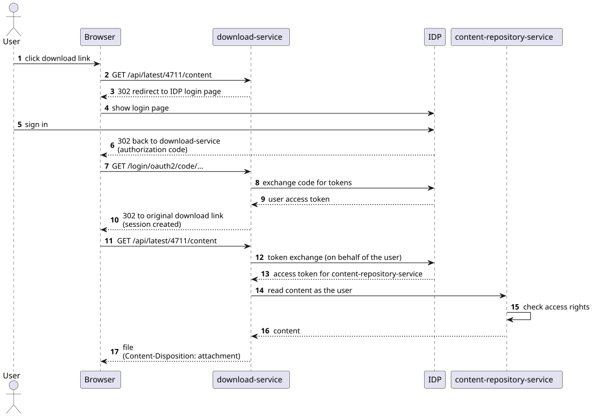

1. Overview
The download-service provides stable, plain HTTP download links for content stored in the content-repository-service (arveo). You can put these links in external applications that cannot talk to the content-repository-service API themselves, for example:
-
a SharePoint site or a wiki page,
-
an e-mail or chat message,
-
a report or a dashboard generated by a third-party tool.
When a user clicks such a link, the browser downloads the file. The download-service makes sure that only authorized users can download content:
-
If the request carries no valid access token, the service redirects the browser to the login page of the configured identity provider (IDP), for example Keycloak or Entra ID. After a successful login, the browser returns to the original download link and the download starts.
-
The download-service reads the content from the content-repository-service on behalf of the logged-in user. The content-repository-service applies its normal access rights checks, so a user can only download content they are allowed to read.
The service does not store any data. It needs no database and no storage of its own.
2. How it works

-
The browser requests a download link, for example
https://download.example.com/api/latest/4711/content. -
All paths below
/api/**are secured. If the request has no valid session and no bearer token, the service answers the request as follows:-
Browser requests (requests that accept
text/html, which is what a browser sends when a user clicks a link) are redirected to the IDP login page. This uses the standard OpenID Connect authorization code flow. -
Other clients (scripts, REST clients) get the status
401 Unauthorized. They must send anAuthorization: Bearer <access token>header.
-
-
After the login, the IDP redirects the browser back to the download-service. The service creates an HTTP session for the user, so further downloads in the same browser session do not need another login. If the user already has a session at the IDP (single sign-on), the redirect round trip is usually invisible to the user.
-
The download-service exchanges the user’s token for a token for the content-repository-service using the OAuth 2.0 token exchange grant (RFC 8693, "on behalf of" flow). It then reads the content from the content-repository-service with this token, so the content-repository-service sees the actual user and not a technical account.
-
The service streams the content back to the browser with these response headers:
-
Content-Type: the media type stored in the repository, -
Content-Length: the size stored in the repository, -
Content-Disposition: attachment; filename="<file name>": the browser saves the file instead of displaying it. The file name is the one stored with the content element. If no file name is stored, the name of the content element is used. See [add-missing-file-name-extension] to learn how a missing file extension is handled.
-
3. Download links
The service provides two kinds of download links:
| Link | Description |
|---|---|
|
Downloads the content element |
|
Downloads the content element |
Parameters:
documentId-
The ID of the document in the content-repository-service, as a number.
versionId-
The ID of a document version in the content-repository-service, as a number.
contentName-
The name of the content element to download. For document types that do not define their own content element names, use
content.
Example links:
https://download.example.com/api/latest/281474976712345/content https://download.example.com/api/version/281474976798765/content
The service answers with the following status codes:
| Status | Meaning |
|---|---|
|
The content is returned. |
|
The browser is not logged in yet and is redirected to the IDP login page. |
|
A non-browser request has no valid access token. |
|
The user is logged in but the content-repository-service denies access to the document. |
|
The document, the version, or the content element does not exist. |
| To create a link in an application, read the document ID (or version ID) from the content-repository-service and add it to the base URL of the download-service. The IDs do not change, so you can store links permanently. |
4. Other endpoints
| Path | Description |
|---|---|
|
Returns the service name and version. No authentication required. |
|
Redirect to the Swagger UI ( |
|
The OpenAPI description of the API. |
|
Health and info endpoints. No authentication required. You can use the health endpoint for liveness and readiness probes. |
|
Further
Spring Boot actuator endpoints. They require the role configured in |
5. Prerequisites
To run the download-service, you need:
-
a running content-repository-service (arveo) that the download-service can reach,
-
an OpenID Connect identity provider (IDP), for example Keycloak, with the clients described in Setting up the identity provider,
-
optionally a config-service (Spring Cloud Config server) and HashiCorp Vault to provide the configuration and secrets,
-
Java 21 or newer if you run the service as a jar. The container image already contains a Java runtime.
6. Setting up the identity provider
The download-service needs two clients at the IDP. The following describes the setup for Keycloak. Other IDPs need equivalent settings.
6.1. Login client (authorization code flow)
The browser uses this client to log in.
-
Client authentication: on (confidential client with a client secret)
-
Standard flow (authorization code flow): enabled
-
Valid redirect URIs:
https://<download-service host>/login/oauth2/code/<registration id>, for examplehttps://download.example.com/login/oauth2/code/keycloak-authorization-code. The registration ID is the name of the client registration in the download-service configuration (see Configuration). -
Scopes:
openid
6.2. Token exchange client (on behalf of flow)
The download-service uses this client to exchange the user’s token for a token for the content-repository-service.
-
Client authentication: on (confidential client with a client secret)
-
Standard flow: disabled
-
Standard token exchange: enabled (Keycloak 26.2 and newer: Capability config → Standard Token Exchange)
Make sure the content-repository-service accepts the tokens issued by token exchange, for example by adding it as an audience (audience mapper in Keycloak).
7. Configuration
The download-service is a Spring Boot application. You can provide the configuration with any mechanism that Spring Boot supports:
-
a config-service (Spring Cloud Config server). The service imports its configuration from the config-service if
spring.cloud.config.uriis set, for example with the environment variableSPRING_CLOUD_CONFIG_URI. The application name, and therefore the name of the configuration file at the config-service, isdownload-service. -
HashiCorp Vault for secrets (
spring.cloud.vault.*). Setspring.cloud.vault.enabled=falseif you do not use Vault. -
an
application.yamlfile next to the jar, or in a mountedconfig/directory of the container, -
environment variables, for example
SERVER_PORT=32224.
7.1. Complete example
server:
port: 32224 (1)
spring:
security:
oauth2:
resourceserver:
jwt:
issuer-uri: "https://idp.example.com/realms/arveo" (2)
client:
registration:
keycloak-authorization-code: (3)
provider: keycloak
client-id: "download-service"
client-secret: "<secret>"
scope: openid
keycloak-token-exchange: (4)
provider: keycloak
client-id: "download-service-obo"
client-secret: "<secret>"
authorization-grant-type: "urn:ietf:params:oauth:grant-type:token-exchange"
provider:
keycloak:
issuer-uri: "https://idp.example.com/realms/arveo"
cloud:
discovery:
client:
simple:
instances:
content-repository-service: (5)
- uri: "https://arveo.example.com"
metadata:
api-version: 1.2.0
commons:
security:
oauth2:
client:
auto-impersonate: true (6)
replace-authorization-header: true (7)
openapi:
token-url: "https://idp.example.com/realms/arveo/protocol/openid-connect/token" (8)
security:
general:
role-for-actuator-access: ACTUATOR (9)
download-service:
add-missing-file-name-extension: true (10)| 1 | The HTTP port of the service. If you do not set it, Spring Boot uses port 8080. The default port of the
download-service in EITCO environments is 32224. |
| 2 | The issuer of the access tokens. The service validates bearer tokens sent by non-browser clients against this issuer. |
| 3 | The client registration for the browser login (see Setting up the identity provider). The name of the registration is part of the redirect URI that you have to register at the IDP. |
| 4 | The client registration for the token exchange. Its authorization-grant-type must be
urn:ietf:params:oauth:grant-type:token-exchange. |
| 5 | Where to find the content-repository-service. The service ID must be content-repository-service. See
Service discovery. |
| 6 | Use the token of the current user to request content from the content-repository-service on behalf of this user.
Keep this true, otherwise the content-repository-service cannot check the access rights of the user. |
| 7 | Replace the authorization header that Spring sets for the logged-in user by the token obtained by token exchange.
Keep this true. |
| 8 | The token URL of the IDP. The Swagger UI uses it to obtain tokens. This property is mandatory. |
| 9 | The role a user needs to access the protected actuator endpoints. If empty, these endpoints are not protected. |
| 10 | See [add-missing-file-name-extension]. |
7.2. Service properties
| Property | Default | Description |
|---|---|---|
|
If the file name of a content element has no extension (for example |
7.3. Security properties
| Property | Default | Description |
|---|---|---|
|
|
The paths that require authentication. Do not change this unless you know what you are doing. |
|
(empty) |
The role required to access the actuator endpoints apart from |
|
all origins, headers and common methods allowed |
The CORS configuration. Restrict |
7.4. Service discovery
The download-service finds the content-repository-service with Spring Cloud service discovery, using the service ID
content-repository-service. You have the following options:
-
Static configuration: list the instances under
spring.cloud.discovery.client.simple.instances.content-repository-service, as shown in the example above. -
Kubernetes: set
spring.cloud.kubernetes.enabled=true(it is disabled by default). The service then discovers the content-repository-service by its Kubernetes service name. The service account of the pod needs permission to read services and endpoints.
7.5. Logging
By default, the service logs to the console and to the file logs/download-service.log in the working directory. You
can change the log levels at runtime with the /actuator/loggers endpoint or with the usual Spring Boot properties,
for example:
logging:
level:
de.eitco: DEBUG
org.springframework.security: DEBUG # helpful to analyze login problems8. Deployment
8.1. Container image
The main deliverable is a container image:
docker-intern.eitco.de:10080/eitco/arveo/download-service:{project-version}
Example:
docker run -d --name download-service \
-p 32224:32224 \
-e SERVER_PORT=32224 \
-e SPRING_CLOUD_CONFIG_URI=http://config-service:8888 \
-e SPRING_CLOUD_VAULT_ENABLED=false \
docker-intern.eitco.de:10080/eitco/arveo/download-service:13.0.3-SNAPSHOT8.2. Kubernetes
-
Use
/actuator/health(or/actuator/health/livenessand/actuator/health/readiness) for the probes. -
Set
spring.cloud.kubernetes.enabled=trueto use Kubernetes service discovery and, optionally, ConfigMaps and Secrets as configuration sources. -
The service creates an HTTP session for logged-in browser users. If you run more than one replica, configure sticky sessions (session affinity) at the ingress. Otherwise, a user may be redirected to the IDP again when a request reaches another replica.
8.3. Windows service
The build also creates a zip file (download-service-<version>-zip.zip) that contains:
-
download-service.jar: the executable service, -
download-service.exeanddownload-service.xml: a WinSW service wrapper.
To install the service, unpack the zip file, put an application.yaml with your configuration next to the jar, and run:
download-service.exe install
download-service.exe startThe service wrapper writes its log files to the logs directory.
8.4. Running behind a reverse proxy
The download links point to the download-service, and the IDP redirects the browser back to the download-service after the login. Therefore:
-
The download-service must be reachable from the users' browsers under the URL used in the links.
-
If a reverse proxy or an ingress terminates TLS, the service must know its external URL, otherwise it sends a wrong redirect URI (for example
http://instead ofhttps://) to the IDP. Make sure the proxy sends theX-Forwarded-*headers and set:server: forward-headers-strategy: framework -
The redirect URI registered at the IDP must use the external URL.
9. Using download links in external applications
You can use the links like any other link to a file, for example in a SharePoint page, a Teams message or an HTML page:
<a href="https://download.example.com/api/latest/281474976712345/content">Download contract</a>Things to consider:
-
Open the link in the browser window or in a new tab (
target="_blank"). Do not load it in aniframeor with JavaScript (fetch, XHR). The login redirect to the IDP only works for normal browser navigation, and most IDPs refuse to show their login page in a frame. -
The user must have read access to the document in the content-repository-service. Otherwise, the download fails with
403after the login. -
Prefer
latestlinks if the link should always deliver the current state of the document. Preferversionlinks for references that must not change, for example in approvals or audit documents.
10. Troubleshooting
| Problem | Possible cause |
|---|---|
The IDP shows an error like "Invalid parameter: redirect_uri". |
The redirect URI is not registered at the login client, or the service computes a wrong external URL. Check the redirect URIs of the client and see Running behind a reverse proxy. |
The user logs in, but the download fails with |
The token exchange does not work or the exchanged token is not accepted. Check that token exchange is enabled for
the token exchange client, that |
A script gets |
This is intended. Non-browser clients must send an |
The service does not start and complains about |
The property |
The downloaded file has no extension. |
No file name is stored with the content element and the media type is unknown or not stored. Check the content in the content-repository-service. |
11. Release Notes
11.1. Release notes 13.0.3-SNAPSHOT (October 10, 2026)
Details
New Features
Changes
Bug Fixes
Interface breaking changes
Configuration changes
Manual migration steps
11.2. Release notes 13.0.2 (October 06, 2026)
Details
New Features
Changes
Bug Fixes
Interface breaking changes
Configuration changes
Manual migration steps